Montaje de la tapa de los árboles de levas - Lateral izquierdo
Herramientas especiales
| • | EN 46101 Guía para juntas de tubos de bujías |
| • | EN-48383 Herramientas de sujeción de los árboles de levas |
Si desea informarse sobre herramientas regionales equivalentes, consultar Herramientas especiales .
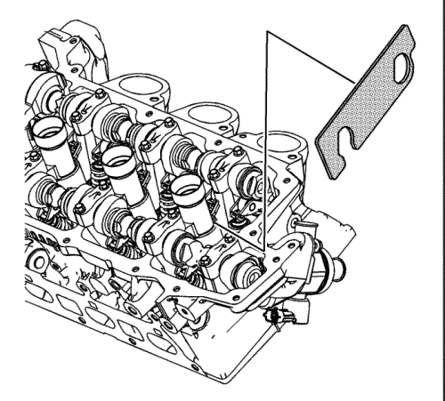
- Desmonte la herramienta EN 48383-2 de la parte trasera de los árboles de levas de la izquierda.
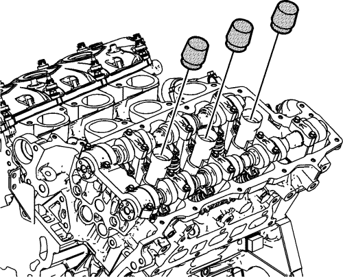
- Monte la guía EN 46101 en los tubos de bujías de la culata izquierda.
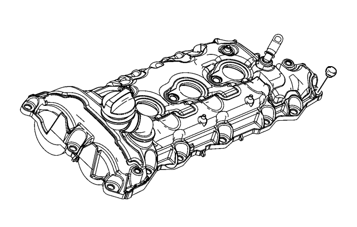
- Monte los NUEVOS pasacables de los tornillos de la tapa del árbol de levas antes de instalar los tornillos.
- Limpie la superficie de sellado de la cubierta del árbol de levas en la culata izquierda con un trapo limpio y sin pelusas.
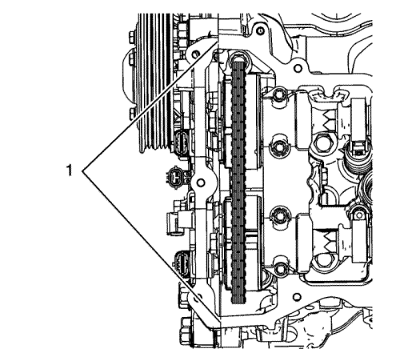
- Coloque un cordón de 8 mm (0,3150 pulg.) de diámetro por 4 mm (0,1575 pulg.) de altura de sellador RTV en las tuberías (1) separadas de la cubierta delantera del motor. Consulte Adhesivos, líquidos, lubricantes y selladores para el sellador recomendado.
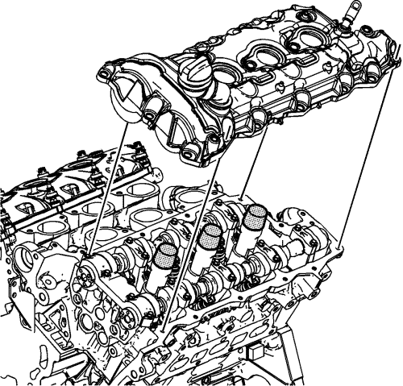
- Coloque la tapa de los árboles de levas del lado izquierdo sobre la culata izquierda.
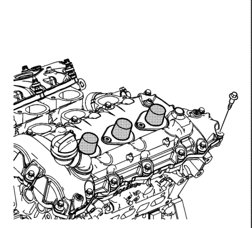
- Monte los tornillos de la tapa de los árboles de levas del lado izquierdo sin apretarlos.
Precaución: Consulte Precaución con las fijaciones en la sección Prólogo
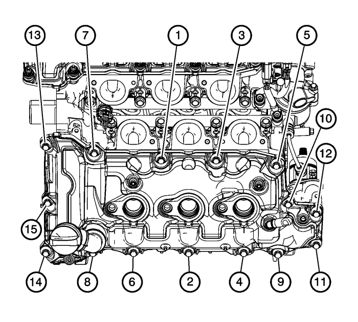
- Apriete los pernos de la tapa de los árboles de levas del lado izquierdo en la secuencia indicada.
| 8.1. | Apriete los tornillos de la tapa de los árboles de levas del lado izquierdo en orden a 10 N·m (89 lib. pulg.). |
| 8.2. | En una segunda pasada, apriete los tornillos de la tapa de los árboles de levas del lado izquierdo en orden a 10 N·m (89 lib. pulg.). |
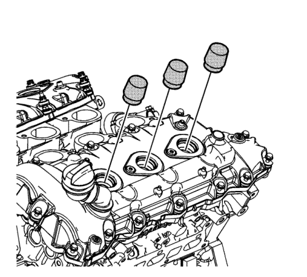
- Desmonte la guía EN 46101 de los tubos de bujías de la culata izquierda.
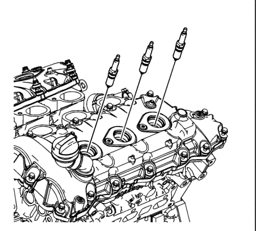
- Monte las bujías NUEVAS en la culata izquierda y apriételas a 18 N·m (13 lib. pie).
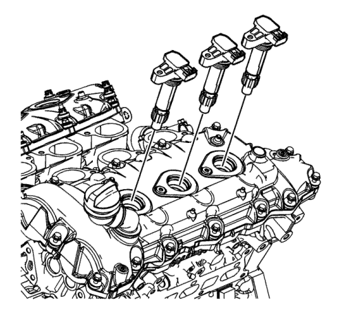
- Monte las bobinas de encendido.
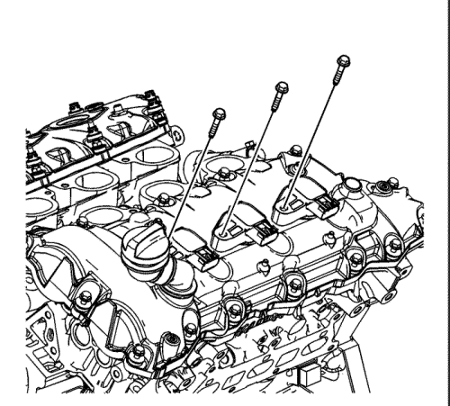
- Monte los pernos de las bobinas de encendido y apriételos a 10 N·m (89 lib. pulg.).
| © Copyright Chevrolet Europe. All rights reserved |